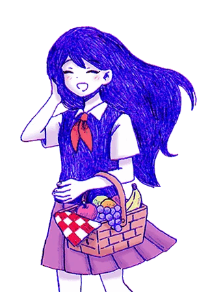
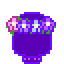

OMORI: Conhecendo a Mari!
Quem é?
Mari é uma das personagens coadjuvantes mais importantes em Omori. Ela é a irmã mais velha de Omori em Headspace e também a irmã mais velha de Sunny no Mundo Real. Sua presença na história é uma das principais forças motrizes do jogo.
Aparência!
Mari é uma adolescente com cabelos longos e lisos e franja. Em Headspace , ela tem cabelos escuros e olhos estilizados em roxo. Ela usa o que parece ser uma variação de um seifuku japonês.
Personalidade
Mari, a irmã mais velha de Sunny em Omori, é uma personagem fundamental. Ela é a figura gentil e carinhosa do grupo de amigos, mas com um lado travesso e perfeccionista. Mesmo após sua morte, sua presença continua a ser uma força motriz na história, pois sua forma espiritual ajuda Sunny a se perdoar e a seguir em frente.